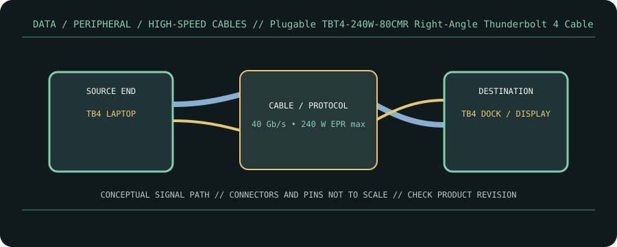

[ CABLE PRODUCT RECORD // PLUGABLE TBT4-240W-80CMR THUNDERBOLT 4 CABLE, 80 CM ]
Plugable TBT4-240W-80CMR Right-Angle Thunderbolt 4 Cable
USB-C male ↔ USB-C male; one straight plug and one right-angle plug. This entry documents the named product model, not a universal guarantee for all cables with the same connector.

CLASSIFICATION: Data, peripheral, and high-speed cables. Model-specific facts below are sourced; negotiated operation remains limited by the connected devices.
Interface and capability
| Product / protocol | Plugable TBT4-240W-80CMR Thunderbolt 4 cable, 80 cm. Thunderbolt 4 / Thunderbolt 3 / USB4; USB Power Delivery EPR. |
|---|---|
| Connector type | USB-C male at both ends, with one right-angle connector; 80 cm model TBT4-240W-80CMR. |
| Electrical / length limits | 80 cm; up to 40 Gb/s data and up to 240 W (48 V/5 A) EPR per Plugable product information; display support up to dual 4K 120 Hz or 8K 60 Hz is system-dependent. |
| Revision-specific compatibility | Thunderbolt-certified cable for compatible Thunderbolt 4/3 or USB4 ports. Lower protocol modes are possible, but host, dock, display, and cable together determine negotiated throughput and display mode. |
Compatibility & handling
- The angled plug changes mechanical clearance only; avoid side-load and bending at connector strain relief.
- Use 240 W only when USB PD EPR is supported by both power source and sink; a 40 Gb/s data rating alone says nothing about the negotiated wattage.
- For dual displays, check the computer’s GPU, port display-stream support, and dock configuration rather than treating the cable’s maximum as a system guarantee.
Sources & further reading
- Plugable — Thunderbolt 4 Right-Angle Cable, 80 cm, 240 WManufacturer model listing for geometry, length, data and power features.
- USB-IF — USB4 Specification v2.0USB4 protocol reference for the relevant Type-C tunneled data modes.
- USB-IF — USB Type-C Cable and Connector SpecificationUSB-C cable and power-marking reference.